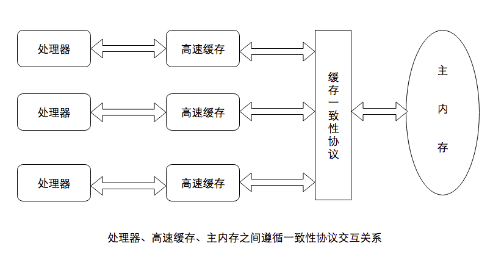

原文连接:https://www.cnblogs.com/lee0527/p/11729698.html
深入理解Java内存模型
【1】CPU和缓存的一致性

我们应该都知道，计算机在执行程序的时候，每条指令都是在CPU中执行的，而执行的时候，又免不了要和数据打交道。而计算机上面的数据，是存放在主存当中的，也就是计算机的物理内存啦。
刚开始，还相安无事的，但是随着CPU技术的发展，CPU的执行速度越来越快。而由于内存的技术并没有太大的变化，所以从内存中读取和写入数据的过程和CPU的执行速度比起来差距就会越来越大,这就导致CPU每次操作内存都要耗费很多等待时间。
所以，人们想出来了一个好的办法，就是在CPU和内存之间增加高速缓存。缓存的概念大家都知道，就是保存一份数据拷贝。他的特点是速度快，内存小，并且昂贵。
那么，程序的执行过程就变成了：
当程序在运行过程中，会将运算需要的数据从主存复制一份到CPU的高速缓存当中，那么CPU进行计算时就可以直接从它的高速缓存读取数据和向其中写入数据，当运算结束之后，再将高速缓存中的数据刷新到主存当中。
在CPU和主存之间增加缓存，在多线程场景下就可能存在缓存一致性问题，也就是说，在多核CPU中，每个核的自己的缓存中，关于同一个数据的缓存内容可能不一致。
【2】处理器优化和指令重排
上面提到在在CPU和主存之间增加缓存，在多线程场景下会存在缓存一致性问题。除了这种情况，还有一种硬件问题也比较重要。那就是为了使处理器内部的运算单元能够尽量的被充分利用，处理器可能会对输入代码进行乱序执行处理。这就是处理器优化。
除了现在很多流行的处理器会对代码进行优化乱序处理，很多编程语言的编译器也会有类似的优化，比如Java虚拟机的即时编译器（JIT）也会做指令重排。
可想而知，如果任由处理器优化和编译器对指令重排的话，就可能导致各种各样的问题。
解决方法：内存屏障
【3】什么是Java内存模型
内存模型
为了保证共享内存的正确性（可见性、有序性、原子性），内存模型定义了共享内存系统中多线程程序读写操作行为的规范。通过这些规则来规范对内存的读写操作，从而保证指令执行的正确性。
Java内存模型(Java Memory Model，JMM)是java虚拟机规范定义的，用来屏蔽掉java程序在各种不同的硬件和操作系统对内存的访问的差异，这样就可以实现java程序在各种不同的平台上都能达到内存访问的一致性。

Java内存模型的主要目标是定义程序中变量的访问规则。即在虚拟机中将变量存储到主内存或者将变量从主内存取出这样的底层细节。需要注意的是这里的变量跟我们写java程序中的变量不是完全等同的。这里的变量是指实例字段，静态字段，构成数组对象的元素，但是不包括局部变量和方法参数(因为这是线程私有的)。
Java内存模型中涉及到的概念有：
- 主内存：java虚拟机规定所有的变量(不是程序中的变量)都必须在主内存中产生。可以与前面说的物理机的主内存相比，只不过物理机的主内存是整个机器的内存，而虚拟机的主内存是虚拟机内存中的一部分。
- 工作内存：java虚拟机中每个线程都有自己的工作内存，该内存是线程私有的。可以与前面说的高速缓存相比。线程的工作内存保存了线程需要的变量在主内存中的副本。虚拟机规定，线程对主内存变量的修改必须在线程的工作内存中进行，不能直接读写主内存中的变量。不同的线程之间也不能相互访问对方的工作内存。如果线程之间需要传递变量的值，必须通过主内存来作为中介进行传递。
工作内存和主内存的划分和 Java 堆，栈，方法区的划分不同，两者基本没有关系，如果勉强对应，则主内存可理 解为堆中实例数据部分，工作内存则对应栈中部分区域
关于Java 堆，栈，方法区：点击学习
【4】volatile的内存语义
volatile写的内存语义：
当写一个变量的时候，JMM会把该线程的私有内存中的共享变量值更新到主内存中，并将其他线程中的值置为无效的；
volatile读的内存语义：
当读一个变量的时候，JMM会先判断是否私有空间内的值是否失效，若失效，线程接下来会从主存中读取变量。
详情见：点击学习
【5】锁的内存语义
当线程释放锁时，JMM会把该线程对应的本地内存中的共享变量刷新到主内存中。
当线程获取锁时，JMM会把该线程对应的本地内存置为无效。从而使得被监视器保护的临界区代码必须要从主内存中去读取共享变量。
详情见：点击学习